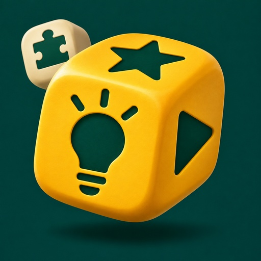
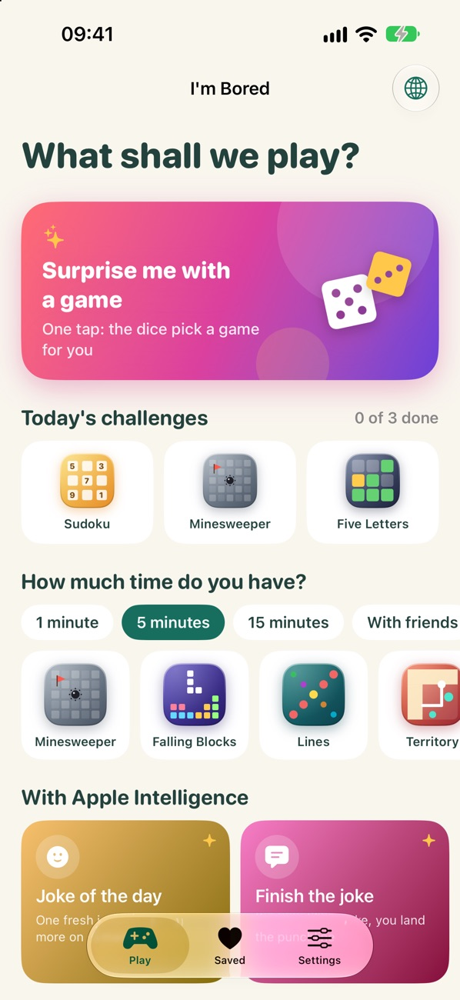
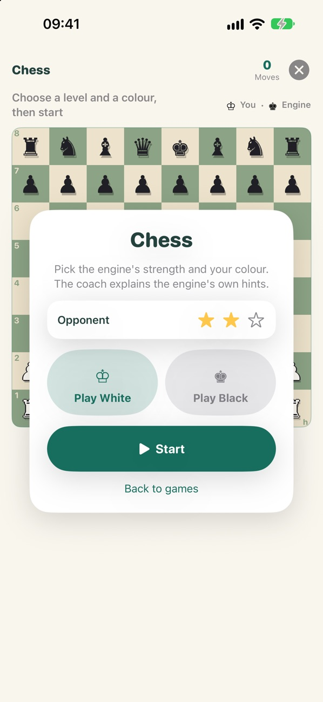

കൂട്ടത്തിലെ എല്ലാവർക്കും
ചാരൻ, വിലക്കിയ വാക്കുകൾ, അല്ലെങ്കിൽ ഒരു വരകളി പരീക്ഷിക്കൂ. ഒരു ഫോണിൽ കളിക്കൂ, അല്ലെങ്കിൽ അടുത്തുള്ള ഫോണുകൾ Wi-Fi, Bluetooth വഴി ബന്ധിപ്പിക്കൂ.

I’m Boredഎവിടെയായാലും, കുറച്ച് രസം
ഒരു ഫോൺ. കളിക്കാൻ എത്രയോ വഴികൾ.
ശാന്തമായ ഒരു നേരത്തിനോ കൂട്ടുകാർ നിറഞ്ഞ മുറിക്കോ വേണ്ടി 60-ലധികം ഗെയിമുകൾ. പാർട്ടി ഗെയിമുകൾ, ബോർഡ് ഗെയിമുകൾ, പ്രിയപ്പെട്ട ആർക്കേഡ് ഗെയിമുകൾ, ആശയങ്ങളുടെ പകിട — എല്ലാം ഒന്നിച്ച്, ഇന്റർനെറ്റ് ഇല്ലാതെ.
സൗജന്യം · പരസ്യങ്ങളില്ല · ആപ്പിനുള്ളിലെ വാങ്ങലുകളില്ല


ആപ്പ് സ്ക്രീൻഷോട്ട്
എന്തുകൊണ്ട് ഇത് നിങ്ങൾക്ക് ഇഷ്ടപ്പെടും
ചാരൻ, വിലക്കിയ വാക്കുകൾ, അല്ലെങ്കിൽ ഒരു വരകളി പരീക്ഷിക്കൂ. ഒരു ഫോണിൽ കളിക്കൂ, അല്ലെങ്കിൽ അടുത്തുള്ള ഫോണുകൾ Wi-Fi, Bluetooth വഴി ബന്ധിപ്പിക്കൂ.
ചെസ്, സുഡോകു, പാമ്പുകളി, വാക്കുകളി തുടങ്ങി പലതും. ചെറിയൊരു ഗെയിം തിരഞ്ഞെടുക്കൂ, ദിവസത്തെ വെല്ലുവിളി ഏറ്റെടുക്കൂ, അല്ലെങ്കിൽ «എന്നെ അതിശയിപ്പിക്കൂ» തിരഞ്ഞെടുക്കട്ടെ.
കൂട്ടവും സ്ഥലവും തിരഞ്ഞെടുത്ത് ചെറിയൊരു പ്രവർത്തനത്തിനായി ആശയങ്ങളുടെ പകിട ഉരുട്ടൂ. വേണമെങ്കിൽ ഉപകരണത്തിൽ പ്രവർത്തിക്കുന്ന AI പുതിയ കാർഡുകളും വിശദീകരണങ്ങളും ചേർക്കും.
ഒന്ന് നോക്കൂ
യഥാർത്ഥ സ്ക്രീനുകൾ. ഉള്ളിലെ കാര്യങ്ങൾ കൂടുതൽ വ്യക്തമായി അറിയാൻ ഇത് സഹായിക്കും.

FAQ
നിങ്ങൾ ആരംഭിക്കുന്നതിന് മുമ്പ് ഉത്തരങ്ങൾ
അതെ. ഗെയിമുകൾ ഓഫ്ലൈനിൽ പ്രവർത്തിക്കും. അടുത്തുള്ളവരുമായി ഒരുമിച്ച് കളിക്കാൻ Wi-Fi, Bluetooth ഉപയോഗിക്കുന്നു; ഇന്റർനെറ്റോ അക്കൗണ്ടുകളോ വേണ്ട.
വേണ്ട. ബോർഡ്, ആർക്കേഡ്, ക്ലാസിക് ഗെയിമുകൾ അതില്ലാതെയും പ്രവർത്തിക്കും. AI കാർഡുകൾ, മാർഗനിർദേശം, വരയ്ക്കൽ ഫീച്ചറുകൾ എന്നിവയ്ക്ക് അനുയോജ്യമായ ഉപകരണവും പിന്തുണയ്ക്കുന്ന ഭാഷയും വേണം.
വേണ്ട. ആപ്പ് സൗജന്യമാണ്; പരസ്യങ്ങളോ ആപ്പിനുള്ളിലെ വാങ്ങലുകളോ ഇല്ല.
പ്രിയപ്പെട്ടവ, സ്കോറുകൾ, ക്രമീകരണങ്ങൾ എന്നിവ നിങ്ങളുടെ ഉപകരണത്തിൽ തന്നെ തുടരും. AI ഉപകരണത്തിൽ പ്രവർത്തിക്കുന്നു; ക്യാമറ ഗെയിമുകളിലെ ചിത്രങ്ങൾ സൂക്ഷിക്കുകയോ അപ്ലോഡ് ചെയ്യുകയോ ഇല്ല.
സൗജന്യം · പരസ്യങ്ങളില്ല · ആപ്പിനുള്ളിലെ വാങ്ങലുകളില്ല
iOS 26 അല്ലെങ്കിൽ പുതിയ പതിപ്പ് വേണം. Apple Intelligence ഫീച്ചറുകൾക്ക് അനുയോജ്യമായ ഉപകരണവും പ്രവർത്തനക്ഷമമാക്കിയ Apple Intelligence-ഉം പിന്തുണയ്ക്കുന്ന ഭാഷയും വേണം. ക്യാമറ ഗെയിമുകൾക്ക് iOS 27 വേണം. ബോർഡ്, ആർക്കേഡ്, ക്ലാസിക് ഗെയിമുകൾ AI ഇല്ലാതെ പ്രവർത്തിക്കും.